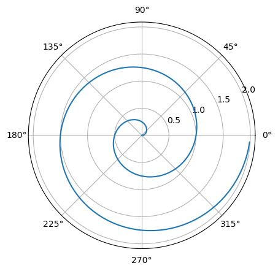
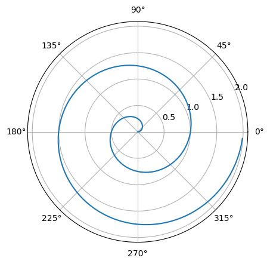

import numpy as np
import matplotlib.pyplot as plt
r = np.arange(0, 2, 0.01)
theta = 2 * np.pi * r
fig, ax = plt.subplots(subplot_kw={'projection': 'polar'})
ax.plot(theta, r)
ax.set_rticks([0.5, 1, 1.5, 2])
ax.grid(True)
plt.show()
Things that could also go into front matter (seel also these docs):
abstract: Some abstractcomments: falsesearch: falseUseful link for Quarto markdown.
See these docs.
Link that opens in the same tab.
A link that opens in new tab.
Full url: https://quarto.org
Simple image:

Image link: 
Image link new tab:  .
.
Image link with link and image titles (image title overrides link title): 
Alternative for alt text: 
This content can be styled with a border
This is some text
Use Filter to adjust styles.
Note that there are five types of callouts, including: note, tip, warning, caution, and important.
Note that there are five types of callouts, including: note, tip, warning, caution, and important.
This is a callout with a title.
Note that there are five types of callouts, including: note, tip, warning, caution, and important.
Note that there are five types of callouts, including: note, tip, warning, caution, and important.
Note that there are five types of callouts, including: note, tip, warning, caution, and important.
Note that there are five types of callouts, including: note, tip, warning, caution, and important.
import numpy as np
import matplotlib.pyplot as plt
r = np.arange(0, 2, 0.01)
theta = 2 * np.pi * r
fig, ax = plt.subplots(subplot_kw={'projection': 'polar'})
ax.plot(theta, r)
ax.set_rticks([0.5, 1, 1.5, 2])
ax.grid(True)
plt.show()
See Figure 1 for an example.
The radius of the circle is 10.
See these docs.
There is a cell below, but it’s hidden:
print('you can see the output and the code!')you can see the output but not the code!you can see the output but not the code!# No output
1 + 1print("`hello fastai`")hello fastai
Below is a cell with the following options:
#|echo: false
#|output: asishello fastai
Collapse code:
print('this is')
print('output')
print('that takes')
print('lots of vertical space')this is
output
that takes
lots of vertical spaceprint('this is')
print('output')
print('that takes')
print('lots of vertical space')this is
output
that takes
lots of vertical spacefizz_buzz <- function(fbnums = 1:50) {
output <- dplyr::case_when(
fbnums %% 15 == 0 ~ "FizzBuzz",
fbnums %% 3 == 0 ~ "Fizz",
fbnums %% 5 == 0 ~ "Buzz",
TRUE ~ as.character(fbnums)
)
print(output)
}def fizz_buzz(num):
if num % 15 == 0:
print("FizzBuzz")
elif num % 5 == 0:
print("Buzz")
elif num % 3 == 0:
print("Fizz")
else:
print(num)fizz_buzz <- function(fbnums = 1:50) {
output <- dplyr::case_when(
fbnums %% 15 == 0 ~ "FizzBuzz",
fbnums %% 3 == 0 ~ "Fizz",
fbnums %% 5 == 0 ~ "Buzz",
TRUE ~ as.character(fbnums)
)
print(output)
}def fizz_buzz(num):
if num % 15 == 0:
print("FizzBuzz")
elif num % 5 == 0:
print("Buzz")
elif num % 3 == 0:
print("Fizz")
else:
print(num)Typing will render this:
See these docs.
See these docs.
Example:
The hottest new programming language is English
— Andrej Karpathy (@karpathy) January 24, 2023
Some TLDR
Introducing the problem
Toggle cells below if you want to see what imports are being made.
#hide
# Uncomment these and run once if you are using colab
# !pip install -qq torchtext==0.8.1
# !pip install -Uqq fastbook#hide
%load_ext autoreload
%autoreload 2
%matplotlib inline#collapse-hide
from fastai.vision.all import *ModuleNotFoundError: No module named 'fastai'#hide
# Put stuff that downloads the data here#hide
# Put stuff that unzips the data here#hide
# Check that everything is as it should be#hide
# Get the data into some variable nextCreate a dataset
Create a model
Train the model
#hide
# Remember to save the modelEvaluate the model
#hide
# Load the model in if neededPut a conclusion here